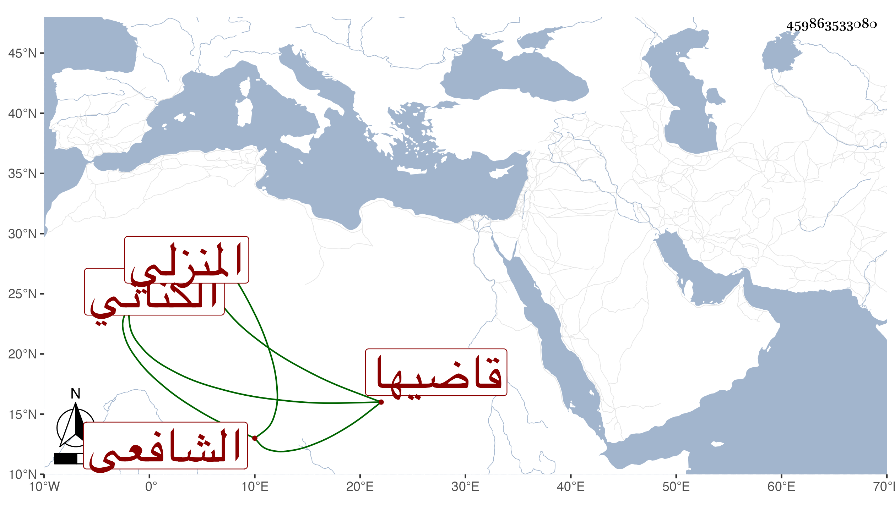

0902Sakhawi.DawLamic.ITO20230111-ara1.EIS1600.459863533080
Biography ID: 459863533080
831
علي بن عبد الكريم بن أحمد بن عبد الظاهر إمام الدين الكناني المنزلي الشافعي قاضيها وابن قضاتها ويعرف بابن عفيف الدين . كان وجيها في تلك الناحية ذا صيت تام بحيث لا يقنع بغيره بعيدا عن الرشوة مع مزيد الكرم والعقل التام والمداراة ودربة في الأحكام وفي الآخر ترك القضاء لولده أصيل الدين محمد ولم ينفك عن المطالعة وكتب العلم بل حفظ في صغره المنهاج وقرأ على الفرياني وآخر من نمطه يسمى عبد الباسط . ومات في يوم الثلاثاء سادس صفر سنة سبع وثمانين وقد قارب الثمانين ولم يخلف بعده في تلك النواحي مثله رحمه الله وإيانا .
